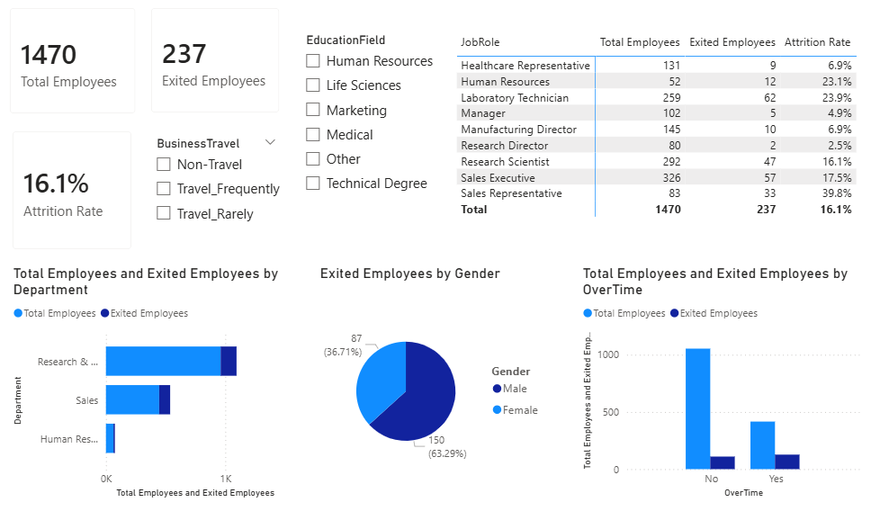

An advanced interactive HR Intelligence application examining organizational attrition risk points, demographic splits, operational job roles, and overwork stressors across 1,470 corporate profiles.
1,470
Total Corporate Headcount
237
Total Attrition Departures
16.1%
Average Attrition Rate

This production-level data application structures end-to-end extraction, data cleansing, customized DAX semantic modeling, and visual storytelling. By isolating core tracking states, the dashboard provides HR professionals with actionable attrition visibility instead of basic high-level estimates.
Engine Features: Incorporates explicit data measures engineered inside a separated metric storage repository to isolate cross-filtered retention points. The interactive interface connects departmental distributions, a demographic gender split (63.3% male vs 36.7% female exits), critical overtime stress multipliers, and a granular Job Role matrix displaying deep conditional risk layers.
Technical Reviewer Guidance: To explore the underlying data schema, custom measure integrations, and relational joins built into this dashboard system, you can pull the complete source project via the official GitHub Repository Link or inspect the active visual layers by installing the production `.pbix` desktop package above.